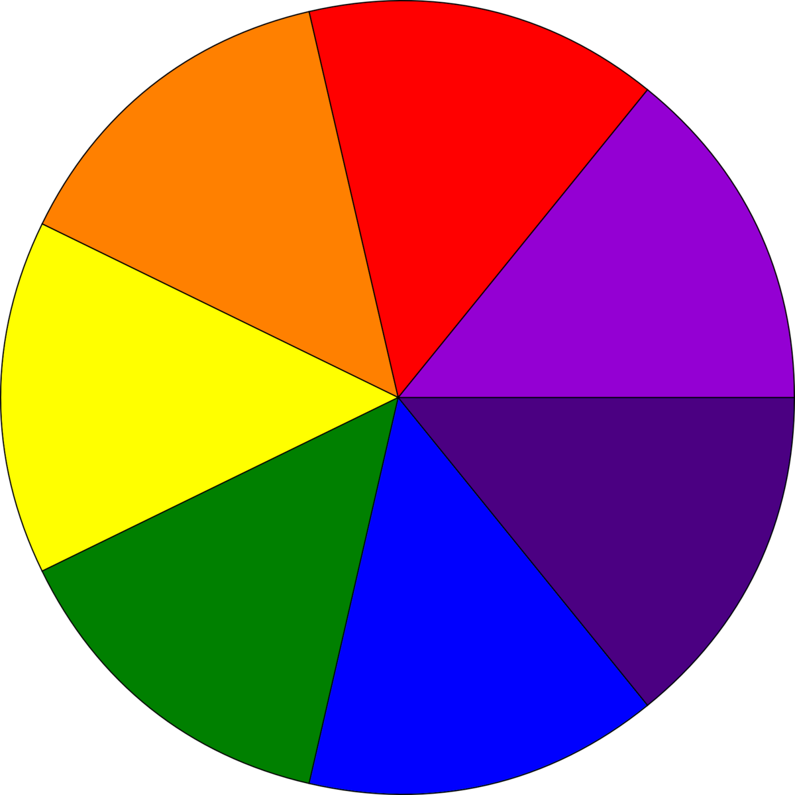

O Disco de Newton é um experimento simples, mas ilustrativo, que demonstra que a luz branca é composta pela soma de todas as cores do espectro visível.
Ele consiste em um disco colorido com as sete cores do arco-íris (vermelho, laranja, amarelo, verde, azul, anil e violeta).
Quando o disco gira rapidamente, a combinação dessas cores na retina humana cria a ilusão de que a cor branca está sendo percebida

Em termos de percepção visual, as cores quentes são geralmente associadas a tons de vermelho, laranja e amarelo, pois lembram a luz do fogo e do sol, transmitindo
uma sensação de calor. No entanto, em termos de física, as cores com comprimentos de onda mais curtos, como o azul e o violeta, são consideradas mais quentes,
pois possuem maior frequência e energia.
por isso as cores vermelha é mais quente porque reflete a cor vermelha e absorve as cores como azul e violeta que tem maior frequência, assim objetos vermelho
absorvem mais calor.
video Disco de Newton DIY - Educação Maker, André Albuquerque 7